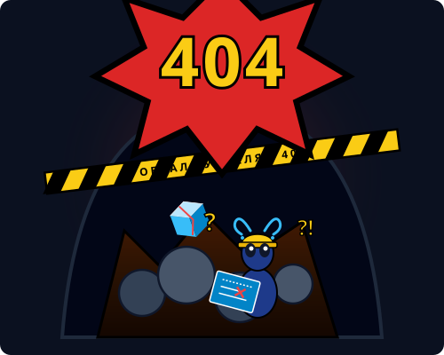

⚠️ ТРЕВОГА РАЗВЕДКИ МУРАВЕЙНИКА
КОД СБОЯ: HTTP_404_NOT_FOUND

ОШИБКА 404: ТУННЕЛЬ ОБВАЛИЛСЯ!
Запрошенный сектор не найден в архитектурных планах Главного Муравейника.
[0.001s] СКАНИРОВАНИЕ СЕТИ ФЕРОМОНОВ: Сигнал потерян на глубине 12 см.
[0.004s] ВЕРОЯТНЫЕ ПРИЧИНЫ ИНЦИДЕНТА:
1. В этот туннель наступил великан-человек в кроссовке 45-го размера.
2. Доктор Муравей Дум телепортировал эту страницу прямо в Латверийский Пень.
3. Строительный взвод Муравьиного Халка случайно раздробил серверную матку.
4. Вы ввели адрес туннеля, который еще не успели прокопать.
2. Доктор Муравей Дум телепортировал эту страницу прямо в Латверийский Пень.
3. Строительный взвод Муравьиного Халка случайно раздробил серверную матку.
4. Вы ввели адрес туннеля, который еще не успели прокопать.
[0.009s] ЦИТАТА КАПИТАНА МУРАВЬЯ: «Спокойно, бойцы! Перегруппироваться и следовать за щитом!»